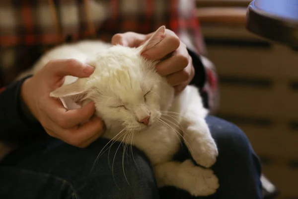
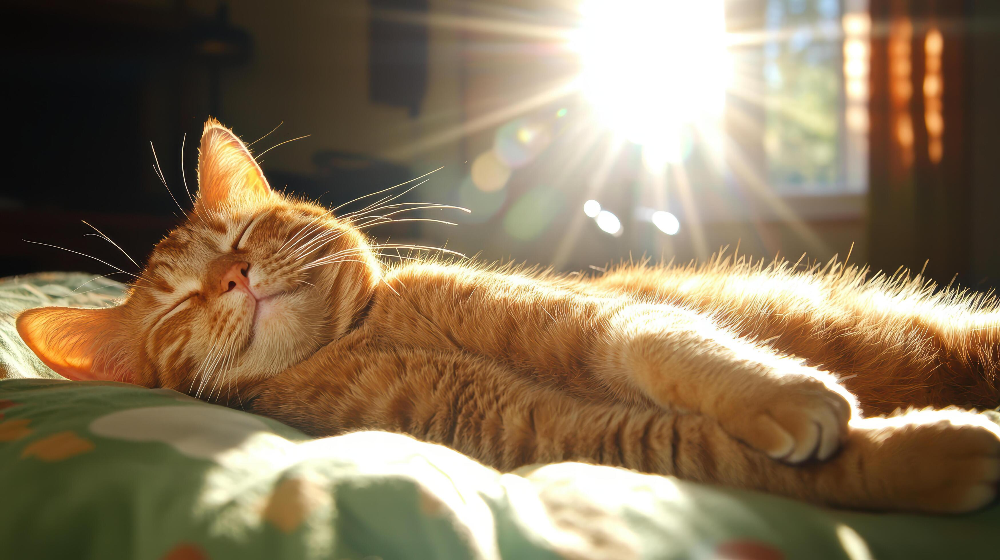

O que é a linguagem dos gatos?
A linguagem dos gatos é a forma como eles conversam com a gente e com outros animais usando o corpo, os sons e o olhar. Como a maioria das pessoas não sabem o que os nossos queridos amigos felinos querem nos dizer, o objetivo desse site é informar a todos sobre como os gatos se comunicam.
Como se diz "Oi" em gatos?
O "oi" dos gatos é um miado curto, agudo e rápido, muitas vezes acompanhado por uma piscada devagar ou pela cauda erguida para o alto. Os felinos usam esse som leve para cumprimentar os humanos quando os veem chegar ou querem chamar atenção de forma amigável.

Como um gato diz que ama você?
Quando um gato quer dizer que te ama, ele pisca devagar, ronronando e encostando a cabeça em você. Esses gestos mostram que ele confia e gosta muito da sua companhia.

Como um gato se comporta quando está relaxado?
- Ficam deitados, esticados, encolhidos como uma bolinha ou descansando com a cabeça erguida e as patas recolhidas sob o corpo.
- Seus olhos piscam suavemente ou ficam semifechados.
- As orelhas ficam relaxadas, em posição vertical e voltadas para frente, mas podem girar para os lados se ele ouvir algum som ao redor.
- Os bigodes também se soltam, afastando-se das bochechas, o que dá a impressão de um sorriso.
